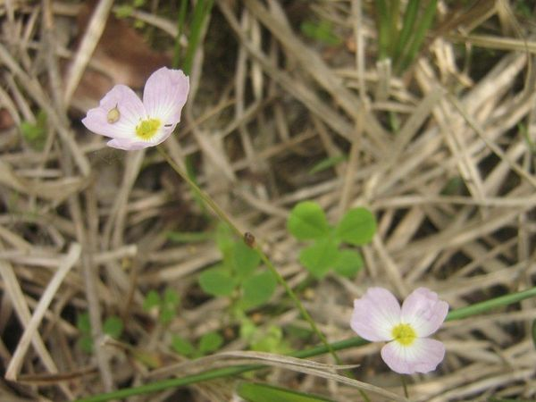

Les pages de JONATHAN
Autres fleurs et lycopodes
Flûteau fausse-renoncule,
baldellie fausse Renoncule
BALDELLIA ranunculoides
(L.) Parl., 1854
Famille des
Alismataceae
Ordre des Alismatales
Etang de la Tuilerie, juin 2009

Espèce protégée en Région Bourgogne
Pour en savoir plus ►
▲
 Espèce protégée en Région Bourgogne
Espèce protégée en Région Bourgogne